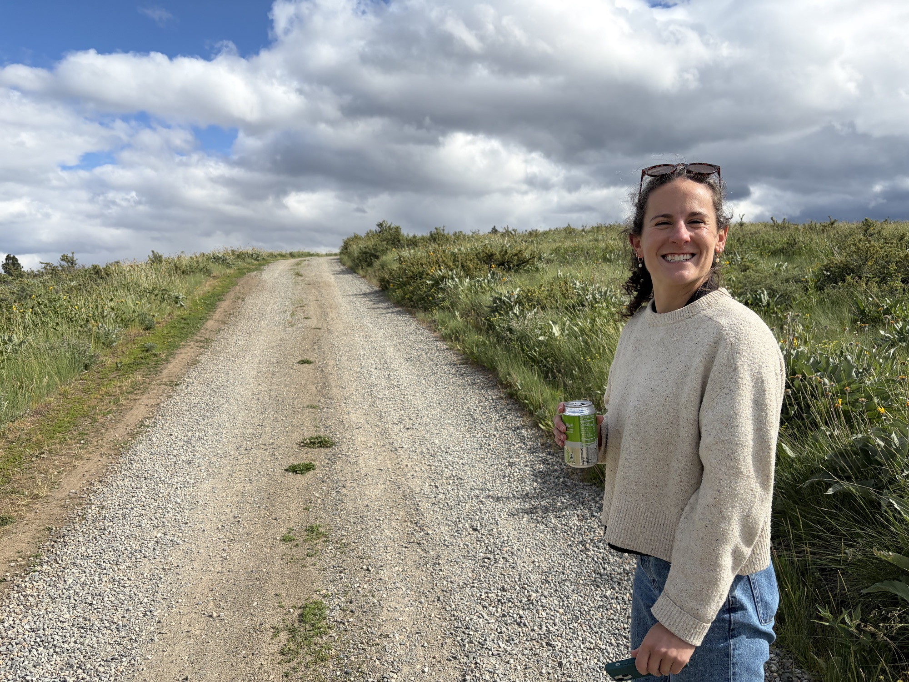

Travel & Lodging
Getting there

The Venue
The Cabin
Studhorse Mountain Road, Winthrop, WA 98862
Our venue is the private home of the Page's, located on top of Studhorse Mountain near Winthrop, WA overlooking the beautiful Northern Cascades and Methow Valley. Their second time meeting (and long before they started dating!) Kate told Roger that she had always wanted to get married there, surounded by mountains and wildflowers. Thanks to the generosity of the Page's, we are able to make that dream our reality!
The cabin is about ten minuites away from bustling downtown Winthrop (population 504) on the eastern side of the Northern Cascade mountains.
Getting Here
By Air
The closest major airport is Seattle-Tacoma International (SEA), about 4 hours from the venue. Paine Field in Everett (PAE) is a smaller, quieter option about 3.5 hours away, and has some flights from major airports. Wenatchee Airport (EAT) is the closest option, but given almost all connections go through SeaTac, you will likely just be trading driving for flying time.
By Car
While Snoqualmie pass is roughly equal in time from SeaTac, we highly reccomend taking Washington Pass through North Cascades National Park (which is free to enter and does not require reservations) at least one way during the day time.
Where to Stay
Camping on Site
A one minuite walk down the hill from the venue, we will have a large mowed lot availible for free camping in tents and in RVs/vans. For those traveling from out of town, we can organize tent/sleeping pad rentals to simplify logistics. There will be bathrooms by the main cabin (an approximately one minuite walk uphill from the camping), and the ability for guests to shower. Please note that the campsites themselves do not have running water or power.
Staying in Town
The town of Winthrop has a number of hotel and BnB options, but limited AirBnB/VRBO options. We have aquired some lodging reservations, please indicate on the survey if you are interested and we will contact you with more options. We will have a shuttle from town to the venue on the day of the wedding (an approximately 10 minuite drive).
We will be reserving rooms in Winthrop for interested guests, please let us know as part of your RSVP if you would like more information on room blocks.